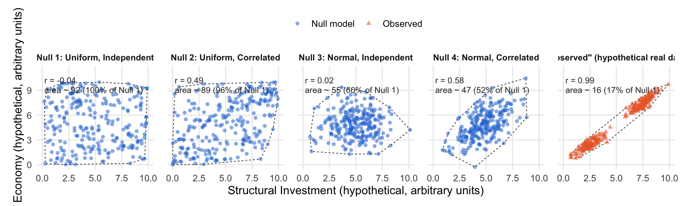

5 Traits, Physiology, and the Global Spectrum of Plant Form and Function
Goals
By the end of this chapter, you should be able to:
- Identify the six traits that explain most of the variation in plant form across species.
- Explain why organism design is limited by physical trade-offs in resource allocation and energy.
- Explain how the four null models differ from each other, and how they differ from observed (real) data.
- Acquire data from a curated public database that specifies selected constraints.
- Use public data to illustrate the extent of trade-offs in plant traits across a selected set of species.
1. Starting with the individual
Ecology is often taught outward-in: populations, then communities, then ecosystems. This book instead starts from the individual organism, because population growth rates, community assembly, and ecosystem processes are all, at bottom, aggregates of what individual organisms are physiologically capable of doing. Before we can ask how large a population can grow, or why one species persists where another doesn’t, we need a vocabulary for describing what an individual organism actually is — physiologically and morphologically — and why it is built the way it is.
This chapter turns the lens inward, to the individual organism, and asks a deceptively simple question: what makes one plant tall and another short, one leaf cheap and short-lived and another expensive and long-lived, one seed tiny and abundant and another large and provisioned? The answer lies in physiology — the internal machinery of growth, water transport, carbon gain, and reproduction — and in the traits that machinery produces. Traits are where physiology becomes visible, measurable, and comparable across species. The framework built here — traits as compact, physiologically-grounded summaries of an individual’s strategy — is the foundation that later chapters on populations, communities, and funding will build on.
This chapter is built around a single influential paper: Díaz, S. et al. (2016), “The global spectrum of plant form and function,” published in Nature. It is one of the most ambitious attempts to ask whether, across all vascular plants on Earth, individual-level traits vary along a small number of general axes — or whether the possibilities are essentially limitless.
2. What is a functional trait?
A functional trait is a measurable feature of an organism — morphological, physiological, or phenological — that influences its performance, and ultimately its growth, survival, and reproduction. Traits sit at the interface between an organism’s physiology and the ecological filters (light, water, nutrients, herbivores, competitors) that act on it. Leaf nitrogen content, for example, is a trait, but it is really a proxy for something physiological: how much of a leaf’s mass is invested in the photosynthetic enzyme machinery. Stem density is a trait, but it stands in for the anatomy of the wood — how much of the stem cross-section is thick-walled fiber versus water-conducting vessels.
Because traits are measurable on individuals and comparable across species, they let ecologists ask general questions — is there a plant “strategy space,” and if so, how is it organized — without needing a physiological model for every one of the roughly 400,000 species of land plants.
3. The search for universal axes of strategy
Díaz et al. (2016) did not start from nothing. Plant ecologists had long suspected that whole-plant strategy could be summarized along a few axes. Grime’s competitor–stress-tolerator–ruderal (CSR) triangle proposed three basic strategies shaped by disturbance and resource availability. Westoby’s “LHS” (leaf-height-seed) scheme proposed three simple, widely measurable traits as a first-pass strategy scheme. Most influentially for this chapter, Wright et al. (2004) assembled a worldwide leaf economics spectrum (LES): across biomes and growth forms, leaf traits fall along a single axis running from cheaply-built, short-lived, high-nutrient “acquisitive” leaves to expensive, long-lived, low-nutrient “conservative” leaves.
These efforts were each restricted to a single organ (mostly leaves) or a small trait set. The open question was whether a similarly compact structure would hold once traits from every major plant organ — stems, leaves, seeds — and the whole plant (height) were considered together, across the full range of vascular plant diversity.
4. Díaz et al. (2016): scale and design
Díaz and 31 co-authors compiled trait records for 46,085 vascular plant species from 423 growth forms and geographic regions — by far the largest and most taxonomically and geographically broad plant trait dataset assembled at the time, built on the TRY plant trait database plus additional unpublished contributions. They focused on six traits chosen because each indexes a fundamentally different aspect of plant form and function, each is measurable across nearly all vascular plants, and together they span growth, survival, and reproduction — the three components of Darwinian fitness.
| Trait | Units | What it measures | Physiological / ecological significance |
|---|---|---|---|
| Adult plant height (H) | m | Typical height of the main photosynthetic tissue at maturity | Pre-emption of light; trades off against construction/maintenance cost and breakage risk with height. |
| Stem specific density (SSD) | mg/mm³ | Dry mass per unit fresh stem volume | Index of mechanical strength and hydraulic safety; low-SSD stems grow fast but are more vulnerable to damage and cavitation. |
| Leaf area (LA) | mm² | One-sided surface area of an individual leaf | Shapes light interception, boundary-layer thickness, and leaf energy/water balance. |
| Leaf mass per area (LMA) | g/m² | Leaf dry mass per unit fresh leaf surface area | Core axis of the leaf economics spectrum: construction cost traded off against leaf lifespan and light-capture efficiency. |
| Leaf nitrogen content (Nmass) | mg/g | N content per unit leaf dry mass | Tracks investment in photosynthetic machinery; higher Nmass raises photosynthetic potential but also palatability to herbivores. |
| Diaspore mass (SM) | mg | Mass of an individual seed or spore | Trades off dispersal ability and colonization potential against per-propagule provisioning and seedling survival. |
5. Two dimensions capture most of the variation
With six traits, the space of possible trait combinations is six-dimensional. If plants filled that space freely, there would be no simple picture to draw. Instead, Díaz et al. found that just two principal component axes — a plane — captured 74% of the variation among species. Two dimensions stood out within that plane:
- The size dimension (height – diaspore mass, H–SM): runs from short species with small seeds to tall species with large seeds. Physiologically, this dimension reflects the size of the whole plant and its parts — how much structural investment (biomechanical support, hydraulic transport distance) and reproductive investment a plant makes.
- The leaf economics dimension (leaf mass per area – nitrogen content, LMA–Nmass): runs from species with cheaply-constructed, nitrogen-rich, “acquisitive” leaves to species with expensive, nitrogen-poor, “conservative” leaves that persist longer and tolerate abiotic and biotic hazards. This is, essentially, the leaf economics spectrum re-discovered inside a much larger, whole-plant analysis.
Stem specific density and leaf area load onto both dimensions rather than standing apart: SSD tracks with the height–seed mass axis, while leaf area shows independent variation tied to both. The headline result is not just that two axes explain most of the variance, but that they correspond to two distinct and physiologically intuitive trade-offs: how big to grow, and how to run your leaf economy.
6. A constrained, “lumpy” trait space
A second, arguably more surprising finding concerns how much of that six-dimensional space is actually occupied. Díaz et al. compared the observed trait hypervolume (the volume of trait space vascular plants actually occupy) against four null models of increasing realism — from traits varying completely independently and uniformly, to traits varying as observed but uncorrelated. Even against the most conservative null model, the observed hypervolume was about 20% smaller, and compared to the simplest null models it was 72–98% smaller.
In other words, of all the trait combinations that seem geometrically possible, only a narrow, non-random subset are evolutionarily viable. The occupied space is also “lumpy”: species cluster into two particularly dense functional hotspots — one dominated by small-seeded, small-leaved herbaceous and graminoid plants, the other by moderately tall, large-leaved, large-seeded woody species — rather than spreading evenly across the plane. Many distantly related lineages land in the same hotspot, which the authors read as evidence that a limited number of trait combinations have been discovered repeatedly and independently over the evolutionary history of land plants — convergence on a small set of workable solutions to the shared physiological problems of growing, surviving, and reproducing.
A toy example, with two made-up variables
The real analysis used six traits at once, which is hard to draw. Here is a much simpler, entirely hypothetical version with just two made-up variables — call them “Structural Investment” and “Leaf Economy” (arbitrary units, not measured data) — chosen only to echo the chapter’s two real dimensions (size, and leaf economics). The goal is to see, on ordinary x–y axes, what each null model actually looks like, and how differently a real, evolved pattern can behave.
Two things stand out, and both echo the real paper’s findings. First, correlation: the observed data (r ≈ 0.99) is far more tightly correlated than any null model managed, including the two null models that were deliberately built with a correlation baked in (r ≈ 0.5–0.6). Second, occupied area: the observed cluster’s convex hull covers only about a sixth of the space Null Model 1 covers, and roughly a third of even the most restrictive null model (Normal, Correlated) — despite being built from the same number of points. That combination — tighter correlation and a smaller, clumped footprint — is exactly what “lumpy” means in this context: not just fewer viable combinations, but combinations that clump into distinct, well-separated solutions (here, two clusters that both sit on the same trend line; in the real data, the herbaceous and woody hotspots) rather than filling one smooth, undifferentiated patch.
7. Traits as windows into physiology
Each of the six traits is a compact summary of an underlying physiological trade-off:
- Height sets how much light a plant can pre-empt from shorter neighbors, but taller stature requires longer hydraulic pathways (raising the risk of xylem cavitation and greater tension at the leaf) and more biomechanical support tissue, and it raises the cost and risk of reaching reproductive structures above the canopy.
- Stem specific density reflects a trade-off between mechanical strength and hydraulic safety on one hand, and growth rate on the other: low-density, loosely packed wood is cheap to build and supports fast volumetric growth, but is more vulnerable to mechanical failure, pathogens, and hydraulic dysfunction than dense wood.
- Leaf area governs the boundary layer around a leaf and therefore its energy balance and water loss: large leaves shed heat less efficiently and are more exposed to evaporative demand, while small leaves buffer temperature and water stress more effectively at some cost to light interception.
- Leaf mass per area is a direct proxy for construction cost per unit light-intercepting area; high-LMA leaves cost more carbon to build but tend to last longer and resist physical and herbivore damage, while low-LMA leaves are cheap and fast to replace but short-lived.
- Leaf nitrogen content per unit mass tracks investment in Rubisco and other photosynthetic proteins; high Nmass raises photosynthetic capacity and growth potential but also raises the nutritional value — and thus the attractiveness — of leaf tissue to herbivores and pathogens.
- Diaspore mass captures a trade-off between the number of seeds or spores a plant can produce and how far and reliably each can disperse, versus how well-provisioned and likely to survive each individual propagule is once it germinates.
None of these trade-offs act in isolation. A short-statured, fast-growing herb with cheap leaves and abundant tiny seeds is a physiologically coherent package — one that would be undermined by, say, also investing heavily in dense, long-lived wood. This is the deeper reason the six-dimensional space collapses onto a plane: physiology imposes internal consistency on which trait combinations can function together in a single organism.
8. From individual traits to communities and ecosystems
Because traits are measured on individuals but summarize physiological strategy, they scale upward in ways that population counts alone do not. Community ecologists use trait distributions — community-weighted means, functional diversity indices — to characterize how a community’s collective physiology responds to disturbance, resource availability, or climate. Global vegetation models increasingly use continuous trait axes like the ones Díaz et al. describe, rather than a small number of discrete plant functional types, to represent how vegetation might respond to environmental change. The two-dimensional global spectrum also maps loosely onto older, verbally-defined strategy schemes — the size dimension echoes the colonization (r) versus competition (K) continuum, and the leaf economics dimension echoes the adversity-selection (A) or leaf-economics continuum — giving those older frameworks a quantitative, globally-tested backbone.
You will meet several of these ideas again once this book turns to population growth models later on. Growth rates, mortality risk, and fecundity — the parameters those models take as inputs — are not arbitrary numbers; they are, in large part, downstream consequences of the trait strategy an organism has committed to. A species positioned at the fast, cheap-leaf, small-seeded end of the global spectrum is built for a different population dynamic than one at the slow, dense-wood, large-seeded end, before a single population equation is written down.
9. Why anchor a chapter on a single paper?
Centering this chapter on one globally general, quantitative study — rather than, say, the natural history of a single growth form — trades breadth of examples for a framework that still grounds every trait in individual physiology. Students get a concrete, well-illustrated case (Figure 2 of the paper, the two-axis trait plane with its herbaceous and woody hotspots) while building toward the more general skill of thinking about organisms as bundles of correlated, physiologically-constrained traits — a lens that applies just as well to a liana, a desert annual, or a temperate tree. A liana example fits naturally as a short illustrative case study here (e.g., where a woody vine that borrows structural support from other plants would plot on the H–SM and LMA–Nmass axes, compared to a free-standing tree) — see the reflection questions below.
10. Data exercise: exploring trait trade-offs with BIEN
The toy example in Section 6 used invented data to show what null models look like. Now you’ll do the real version, in miniature: pull real trait measurements for a set of species you choose, and see whether — and how strongly — two traits trade off (or coordinate) across those species.
You get to define your own subset of the plant world to look at. Constrain your species list by geographic region (a country, U.S. or Canadian state/province), by taxonomic group (a genus or family), or both — your choice, as long as you can explain why you picked it. A few ways to think about a constraint: species native to your home state; a plant family you’re curious about (conifers, legumes, grasses); a genus with a lot of horticultural or agricultural species; or a region you’re planning to visit.
library(BIEN)
library(dplyr)
library(tidyr)
library(ggplot2)
## Step 1: see what traits are actually available. Run this yourself and
## look at the output -- the set of available traits can grow over time,
## so don't rely on a list someone else wrote down.
BIEN_trait_list()
## Step 2: choose TWO traits to compare, copied exactly from the
## trait_name column you just looked at.
my_traits <- c("whole plant height", "leaf area") # <- replace with your choices
## Step 3: build your species list. Pick ONE approach (or combine them).
## 3a. By geographic region -- every species BIEN has recorded for a
## country or a U.S./Canadian state or province:
my_species <- BIEN_list_country(country = "Costa Rica")$scrubbed_species_binomial
# my_species <- BIEN_list_state(country = "United States", state = "Ohio")$scrubbed_species_binomial
## 3b. By taxonomic group -- skip the species list and query a genus or
## family directly instead (use this INSTEAD of Step 4 below):
# my_traits_data <- BIEN_trait_traitbygenus(genus = "Quercus", trait = my_traits)
# my_traits_data <- BIEN_trait_traitbyfamily(family = "Fabaceae", trait = my_traits)
## 3c. Combine region + taxonomy -- narrow a regional list (3a) down to
## one or more genera you're interested in:
# my_species <- my_species[grepl("^Quercus ", my_species)]
## Step 4: download your two traits for your species list.
## (Skip this step if you used option 3b instead.)
my_traits_data <- BIEN_trait_traitbyspecies(species = my_species, trait = my_traits)
## Step 5: look at what actually came back before assuming column names.
## BIEN returns long-format data (one row per species-trait record).
str(my_traits_data)
names(my_traits_data)
## Step 6: reshape to one row per species, one column per trait.
## Column names below (scrubbed_species_binomial, trait_name, trait_value)
## match current BIEN documentation -- confirm against Step 5's output.
traits_wide <- my_traits_data |>
mutate(trait_value = as.numeric(trait_value)) |>
group_by(scrubbed_species_binomial, trait_name) |>
summarise(trait_value = mean(trait_value, na.rm = TRUE), .groups = "drop") |>
pivot_wider(names_from = trait_name, values_from = trait_value) |>
drop_na()
## Step 7: plot your two traits against each other.
ggplot(traits_wide, aes(x = .data[[my_traits[1]]], y = .data[[my_traits[2]]])) +
geom_point(alpha = 0.7, colour = "#2a78d6", size = 2) +
labs(x = my_traits[1], y = my_traits[2],
title = paste("Trait relationship across", nrow(traits_wide), "species")) +
theme_minimal()
## Step 8: quantify the relationship.
cor(traits_wide[[my_traits[1]]], traits_wide[[my_traits[2]]], use = "complete.obs")Write up two or three paragraphs: (1) which species subset and two traits you chose, and why; (2) what the scatterplot and correlation coefficient show — are the traits trading off (negative correlation), coordinating (positive correlation), or largely unrelated (correlation near zero) across your species; and (3) how that result connects to the physiological trade-off framework from this chapter — what would have to be true, mechanistically, for your two traits to relate the way they do in your data?
11. Reflection questions
- Pick two traits from Table 5.1 that are not on the same principal-component axis (e.g., leaf area and diaspore mass). Can you think of a plant where these two traits would pull in “conflicting” physiological directions? What might resolve that conflict?
- The observed trait hypervolume is smaller than all four null models, but least different from null model 4 (which already assumes traits are correlated as observed). What does that comparison tell you about how much of the “constraint” in plant trait space comes from correlations among traits, versus limits on any single trait’s range?
- The two functional hotspots in Figure 2 of Díaz et al. (2016) are described as occupied by many distantly related lineages. What does that convergence suggest about the role of natural selection versus shared ancestry in shaping plant form?
- How would you expect a liana — a woody vine that borrows structural support from other plants rather than building its own — to plot on the height–diaspore mass axis, compared to a free-standing tree of similar leaf economics? What does that comparison reveal about the limits of using height alone as a proxy for “size” investment?
- This chapter frames traits as compact summaries of physiological trade-offs. Choose one trait and describe, in your own words, the underlying physiological mechanism it stands in for.
- In your BIEN data exercise, was the relationship between your two traits closer to the null-model pattern (weak or no correlation) or the toy “observed” pattern (strong correlation, clumped rather than evenly spread)? What might explain the difference, given how many species — and how narrow a slice of the plant world — you sampled compared to Díaz et al.’s 46,085 species?
References
Díaz, S., Kattge, J., Cornelissen, J. H. C., Wright, I. J., Lavorel, S., Dray, S., Reu, B., Kleyer, M., Wirth, C., Prentice, I. C., Garnier, E., Bönisch, G., Westoby, M., Poorter, H., Reich, P. B., Moles, A. T., Dickie, J., Gillison, A. N., Zanne, A. E., Chave, J., Wright, S. J., Sheremet’ev, S. N., Jactel, H., Baraloto, C., Cerabolini, B., Pierce, S., Shipley, B., Kirkup, D., Casanoves, F., Joswig, J., Günther, A., Falczuk, V., Rüger, N., Mahecha, M. D., & Gorné, L. D. (2016). The global spectrum of plant form and function. Nature, 529, 167–171. https://doi.org/10.1038/nature16489
Wright, I. J. et al. (2004). The worldwide leaf economics spectrum. Nature, 428, 821–827.
Westoby, M. (1998). A leaf-height-seed (LHS) plant ecology strategy scheme. Plant and Soil, 199, 213–227.
Grime, J. P. (1974). Vegetation classification by reference to strategies. Nature, 250, 26–31.